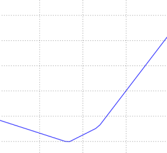
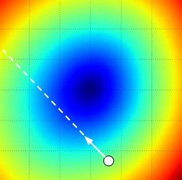

Table of Contents:
Introduction
In the previous section we introduced two key components in context
of the image classification task:
- A (parameterized) score function mapping the raw
image pixels to class scores (e.g. a linear function)
- A loss function that measured the quality of a
particular set of parameters based on how well the induced scores agreed
with the ground truth labels in the training data. We saw that there are
many ways and versions of this (e.g. Softmax/SVM).
Concretely, recall that the linear function had the form \( f(x_i, W)
= W x_i \) and the SVM we developed was formulated as:
\[
L = \frac{1}{N} \sum_i \sum_{j\neq y_i} \left[ \max(0, f(x_i; W)_j -
f(x_i; W)_{y_i} + 1) \right] + \alpha R(W)
\]
We saw that a setting of the parameters \(W\) that produced
predictions for examples \(x_i\) consistent with their ground truth
labels \(y_i\) would also have a very low loss \(L\). We are now going
to introduce the third and last key component:
optimization. Optimization is the process of finding
the set of parameters \(W\) that minimize the loss function.
Foreshadowing: Once we understand how these three
core components interact, we will revisit the first component (the
parameterized function mapping) and extend it to functions much more
complicated than a linear mapping: First entire Neural Networks, and
then Convolutional Neural Networks. The loss functions and the
optimization process will remain relatively unchanged.
Visualizing the loss
function
The loss functions we’ll look at in this class are usually defined
over very high-dimensional spaces (e.g. in CIFAR-10 a linear classifier
weight matrix is of size [10 x 3073] for a total of 30,730 parameters),
making them difficult to visualize. However, we can still gain some
intuitions about one by slicing through the high-dimensional space along
rays (1 dimension), or along planes (2 dimensions). For example, we can
generate a random weight matrix \(W\) (which corresponds to a single
point in the space), then march along a ray and record the loss function
value along the way. That is, we can generate a random direction \(W_1\)
and compute the loss along this direction by evaluating \(L(W + a W_1)\)
for different values of \(a\). This process generates a simple plot with
the value of \(a\) as the x-axis and the value of the loss function as
the y-axis. We can also carry out the same procedure with two dimensions
by evaluating the loss \( L(W + a W_1 + b W_2) \) as we vary \(a, b\).
In a plot, \(a, b\) could then correspond to the x-axis and the y-axis,
and the value of the loss function can be visualized with a color:



Loss function landscape for the Multiclass SVM (without regularization) for one single example (left,middle) and for a hundred examples (right) in CIFAR-10. Left: one-dimensional loss by only varying <b>a</b>. Middle, Right: two-dimensional loss slice, Blue = low loss, Red = high loss. Notice the piecewise-linear structure of the loss function. The losses for multiple examples are combined with average, so the bowl shape on the right is the average of many piece-wise linear bowls (such as the one in the middle).
We can explain the piecewise-linear structure of the loss function by
examining the math. For a single example we have:
\[
L_i = \sum_{j\neq y_i} \left[ \max(0, w_j^Tx_i - w_{y_i}^Tx_i + 1)
\right]
\]
It is clear from the equation that the data loss for each example is
a sum of (zero-thresholded due to the \((0,-)\) function) linear
functions of \(W\). Moreover, each row of \(W\) (i.e. \(w_j\)) sometimes
has a positive sign in front of it (when it corresponds to a wrong class
for an example), and sometimes a negative sign (when it corresponds to
the correct class for that example). To make this more explicit,
consider a simple dataset that contains three 1-dimensional points and
three classes. The full SVM loss (without regularization) becomes:
\[
\begin{align}
L_0 = & \max(0, w_1^Tx_0 - w_0^Tx_0 + 1) + \max(0, w_2^Tx_0 -
w_0^Tx_0 + 1) \\\\
L_1 = & \max(0, w_0^Tx_1 - w_1^Tx_1 + 1) + \max(0, w_2^Tx_1 -
w_1^Tx_1 + 1) \\\\
L_2 = & \max(0, w_0^Tx_2 - w_2^Tx_2 + 1) + \max(0, w_1^Tx_2 -
w_2^Tx_2 + 1) \\\\
L = & (L_0 + L_1 + L_2)/3
\end{align}
\]
Since these examples are 1-dimensional, the data \(x_i\) and weights
\(w_j\) are numbers. Looking at, for instance, \(w_0\), some terms above
are linear functions of \(w_0\) and each is clamped at zero. We can
visualize this as follows:

1-dimensional illustration of the data loss. The x-axis is a single weight and the y-axis is the loss. The data loss is a sum of multiple terms, each of which is either independent of a particular weight, or a linear function of it that is thresholded at zero. The full SVM data loss is a 30,730-dimensional version of this shape.
As an aside, you may have guessed from its bowl-shaped appearance
that the SVM cost function is an example of a convex function
There is a large amount of literature devoted to efficiently minimizing
these types of functions, and you can also take a Stanford class on the
topic ( convex
optimization ). Once we extend our score functions \(f\) to Neural
Networks our objective functions will become non-convex, and the
visualizations above will not feature bowls but complex, bumpy
terrains.
Non-differentiable loss functions. As a technical note, you
can also see that the kinks in the loss function (due to the
max operation) technically make the loss function non-differentiable
because at these kinks the gradient is not defined. However, the subgradient still
exists and is commonly used instead. In this class will use the terms
subgradient and gradient interchangeably.
Optimization
To reiterate, the loss function lets us quantify the quality of any
particular set of weights W. The goal of optimization
is to find W that minimizes the loss function. We will
now motivate and slowly develop an approach to optimizing the loss
function. For those of you coming to this class with previous
experience, this section might seem odd since the working example we’ll
use (the SVM loss) is a convex problem, but keep in mind that our goal
is to eventually optimize Neural Networks where we can’t easily use any
of the tools developed in the Convex Optimization literature.
Strategy
#1: A first very bad idea solution: Random search
Since it is so simple to check how good a given set of parameters
W is, the first (very bad) idea that may come to mind
is to simply try out many different random weights and keep track of
what works best. This procedure might look as follows:
# assume X_train is the data where each column is an example (e.g. 3073 x 50,000)
# assume Y_train are the labels (e.g. 1D array of 50,000)
# assume the function L evaluates the loss function
bestloss = float("inf") # Python assigns the highest possible float value
for num in range(1000):
W = np.random.randn(10, 3073) * 0.0001 # generate random parameters
loss = L(X_train, Y_train, W) # get the loss over the entire training set
if loss < bestloss: # keep track of the best solution
bestloss = loss
bestW = W
print 'in attempt %d the loss was %f, best %f' % (num, loss, bestloss)
# prints:
# in attempt 0 the loss was 9.401632, best 9.401632
# in attempt 1 the loss was 8.959668, best 8.959668
# in attempt 2 the loss was 9.044034, best 8.959668
# in attempt 3 the loss was 9.278948, best 8.959668
# in attempt 4 the loss was 8.857370, best 8.857370
# in attempt 5 the loss was 8.943151, best 8.857370
# in attempt 6 the loss was 8.605604, best 8.605604
# ... (trunctated: continues for 1000 lines)
In the code above, we see that we tried out several random weight
vectors W, and some of them work better than others. We
can take the best weights W found by this search and
try it out on the test set:
# Assume X_test is [3073 x 10000], Y_test [10000 x 1]
scores = Wbest.dot(Xte_cols) # 10 x 10000, the class scores for all test examples
# find the index with max score in each column (the predicted class)
Yte_predict = np.argmax(scores, axis = 0)
# and calculate accuracy (fraction of predictions that are correct)
np.mean(Yte_predict == Yte)
# returns 0.1555
With the best W this gives an accuracy of about
15.5%. Given that guessing classes completely at random
achieves only 10%, that’s not a very bad outcome for a such a brain-dead
random search solution!
Core idea: iterative refinement. Of course, it turns
out that we can do much better. The core idea is that finding the best
set of weights W is a very difficult or even impossible
problem (especially once W contains weights for entire
complex neural networks), but the problem of refining a specific set of
weights W to be slightly better is significantly less
difficult. In other words, our approach will be to start with a random
W and then iteratively refine it, making it slightly
better each time.
Our strategy will be to start with random weights and iteratively
refine them over time to get lower loss
Blindfolded hiker analogy. One analogy that you may
find helpful going forward is to think of yourself as hiking on a hilly
terrain with a blindfold on, and trying to reach the bottom. In the
example of CIFAR-10, the hills are 30,730-dimensional, since the
dimensions of W are 10 x 3073. At every point on the
hill we achieve a particular loss (the height of the terrain).
Strategy #2: Random Local
Search
The first strategy you may think of is to try to extend one foot in a
random direction and then take a step only if it leads downhill.
Concretely, we will start out with a random \(W\), generate random
perturbations \( W \) to it and if the loss at the perturbed \(W + W\)
is lower, we will perform an update. The code for this procedure is as
follows:
W = np.random.randn(10, 3073) * 0.001 # generate random starting W
bestloss = float("inf")
for i in range(1000):
step_size = 0.0001
Wtry = W + np.random.randn(10, 3073) * step_size
loss = L(Xtr_cols, Ytr, Wtry)
if loss < bestloss:
W = Wtry
bestloss = loss
print 'iter %d loss is %f' % (i, bestloss)
Using the same number of loss function evaluations as before (1000),
this approach achieves test set classification accuracy of
21.4%. This is better, but still wasteful and
computationally expensive.
Strategy #3: Following the
Gradient
In the previous section we tried to find a direction in the
weight-space that would improve our weight vector (and give us a lower
loss). It turns out that there is no need to randomly search for a good
direction: we can compute the best direction along which we
should change our weight vector that is mathematically guaranteed to be
the direction of the steepest descent (at least in the limit as the step
size goes towards zero). This direction will be related to the
gradient of the loss function. In our hiking analogy,
this approach roughly corresponds to feeling the slope of the hill below
our feet and stepping down the direction that feels steepest.
In one-dimensional functions, the slope is the instantaneous rate of
change of the function at any point you might be interested in. The
gradient is a generalization of slope for functions that don’t take a
single number but a vector of numbers. Additionally, the gradient is
just a vector of slopes (more commonly referred to as
derivatives) for each dimension in the input space. The
mathematical expression for the derivative of a 1-D function with
respect its input is:
\[
\frac{df(x)}{dx} = \lim_{h\ \to 0} \frac{f(x + h) - f(x)}{h}
\]
When the functions of interest take a vector of numbers instead of a
single number, we call the derivatives partial
derivatives, and the gradient is simply the vector of partial
derivatives in each dimension.
Computing the gradient
There are two ways to compute the gradient: A slow, approximate but
easy way (numerical gradient), and a fast, exact but
more error-prone way that requires calculus (analytic
gradient). We will now present both.
Computing
the gradient numerically with finite differences
The formula given above allows us to compute the gradient
numerically. Here is a generic function that takes a function
f, a vector x to evaluate the gradient on, and
returns the gradient of f at x:
def eval_numerical_gradient(f, x):
"""
a naive implementation of numerical gradient of f at x
- f should be a function that takes a single argument
- x is the point (numpy array) to evaluate the gradient at
"""
fx = f(x) # evaluate function value at original point
grad = np.zeros(x.shape)
h = 0.00001
# iterate over all indexes in x
it = np.nditer(x, flags=['multi_index'], op_flags=['readwrite'])
while not it.finished:
# evaluate function at x+h
ix = it.multi_index
old_value = x[ix]
x[ix] = old_value + h # increment by h
fxh = f(x) # evalute f(x + h)
x[ix] = old_value # restore to previous value (very important!)
# compute the partial derivative
grad[ix] = (fxh - fx) / h # the slope
it.iternext() # step to next dimension
return grad
Following the gradient formula we gave above, the code above iterates
over all dimensions one by one, makes a small change h
along that dimension and calculates the partial derivative of the loss
function along that dimension by seeing how much the function changed.
The variable grad holds the full gradient in the end.
Practical considerations. Note that in the
mathematical formulation the gradient is defined in the limit as
h goes towards zero, but in practice it is often
sufficient to use a very small value (such as 1e-5 as seen in the
example). Ideally, you want to use the smallest step size that does not
lead to numerical issues. Additionally, in practice it often works
better to compute the numeric gradient using the centered
difference formula: \( [f(x+h) - f(x-h)] / 2 h \) . See wiki
for details.
We can use the function given above to compute the gradient at any
point and for any function. Lets compute the gradient for the CIFAR-10
loss function at some random point in the weight space:
# to use the generic code above we want a function that takes a single argument
# (the weights in our case) so we close over X_train and Y_train
def CIFAR10_loss_fun(W):
return L(X_train, Y_train, W)
W = np.random.rand(10, 3073) * 0.001 # random weight vector
df = eval_numerical_gradient(CIFAR10_loss_fun, W) # get the gradient
The gradient tells us the slope of the loss function along every
dimension, which we can use to make an update:
loss_original = CIFAR10_loss_fun(W) # the original loss
print 'original loss: %f' % (loss_original, )
# lets see the effect of multiple step sizes
for step_size_log in [-10, -9, -8, -7, -6, -5,-4,-3,-2,-1]:
step_size = 10 ** step_size_log
W_new = W - step_size * df # new position in the weight space
loss_new = CIFAR10_loss_fun(W_new)
print 'for step size %f new loss: %f' % (step_size, loss_new)
# prints:
# original loss: 2.200718
# for step size 1.000000e-10 new loss: 2.200652
# for step size 1.000000e-09 new loss: 2.200057
# for step size 1.000000e-08 new loss: 2.194116
# for step size 1.000000e-07 new loss: 2.135493
# for step size 1.000000e-06 new loss: 1.647802
# for step size 1.000000e-05 new loss: 2.844355
# for step size 1.000000e-04 new loss: 25.558142
# for step size 1.000000e-03 new loss: 254.086573
# for step size 1.000000e-02 new loss: 2539.370888
# for step size 1.000000e-01 new loss: 25392.214036
Update in negative gradient direction. In the code
above, notice that to compute W_new we are making an update
in the negative direction of the gradient df since we wish
our loss function to decrease, not increase.
Effect of step size. The gradient tells us the
direction in which the function has the steepest rate of increase, but
it does not tell us how far along this direction we should step. As we
will see later in the course, choosing the step size (also called the
learning rate) will become one of the most important (and most
headache-inducing) hyperparameter settings in training a neural network.
In our blindfolded hill-descent analogy, we feel the hill below our feet
sloping in some direction, but the step length we should take is
uncertain. If we shuffle our feet carefully we can expect to make
consistent but very small progress (this corresponds to having a small
step size). Conversely, we can choose to make a large, confident step in
an attempt to descend faster, but this may not pay off. As you can see
in the code example above, at some point taking a bigger step gives a
higher loss as we “overstep”.

Visualizing the effect of step size. We start at some particular spot W and evaluate the gradient (or rather its negative - the white arrow) which tells us the direction of the steepest decrease in the loss function. Small steps are likely to lead to consistent but slow progress. Large steps can lead to better progress but are more risky. Note that eventually, for a large step size we will overshoot and make the loss worse. The step size (or as we will later call it - the <b>learning rate</b>) will become one of the most important hyperparameters that we will have to carefully tune.
A problem of efficiency. You may have noticed that
evaluating the numerical gradient has complexity linear in the number of
parameters. In our example we had 30730 parameters in total and
therefore had to perform 30,731 evaluations of the loss function to
evaluate the gradient and to perform only a single parameter update.
This problem only gets worse, since modern Neural Networks can easily
have tens of millions of parameters. Clearly, this strategy is not
scalable and we need something better.
Computing the
gradient analytically with Calculus
The numerical gradient is very simple to compute using the finite
difference approximation, but the downside is that it is approximate
(since we have to pick a small value of h, while the true
gradient is defined as the limit as h goes to zero), and that
it is very computationally expensive to compute. The second way to
compute the gradient is analytically using Calculus, which allows us to
derive a direct formula for the gradient (no approximations) that is
also very fast to compute. However, unlike the numerical gradient it can
be more error prone to implement, which is why in practice it is very
common to compute the analytic gradient and compare it to the numerical
gradient to check the correctness of your implementation. This is called
a gradient check.
Lets use the example of the SVM loss function for a single
datapoint:
\[
L_i = \sum_{j\neq y_i} \left[ \max(0, w_j^Tx_i - w_{y_i}^Tx_i + \Delta)
\right]
\]
We can differentiate the function with respect to the weights. For
example, taking the gradient with respect to \(w_{y_i}\) we obtain:
\[
\nabla_{w_{y_i}} L_i = - \left( \sum_{j\neq y_i} \mathbb{1}(w_j^Tx_i -
w_{y_i}^Tx_i + \Delta > 0) \right) x_i
\]
where \(\) is the indicator function that is one if the condition
inside is true or zero otherwise. While the expression may look scary
when it is written out, when you’re implementing this in code you’d
simply count the number of classes that didn’t meet the desired margin
(and hence contributed to the loss function) and then the data vector
\(x_i\) scaled by this number is the gradient. Notice that this is the
gradient only with respect to the row of \(W\) that corresponds to the
correct class. For the other rows where \(j y_i \) the gradient is:
\[
\nabla_{w_j} L_i = \mathbb{1}(w_j^Tx_i - w_{y_i}^Tx_i + \Delta > 0)
x_i
\]
Once you derive the expression for the gradient it is
straight-forward to implement the expressions and use them to perform
the gradient update.
Gradient Descent
Now that we can compute the gradient of the loss function, the
procedure of repeatedly evaluating the gradient and then performing a
parameter update is called Gradient Descent. Its
vanilla version looks as follows:
# Vanilla Gradient Descent
while True:
weights_grad = evaluate_gradient(loss_fun, data, weights)
weights += - step_size * weights_grad # perform parameter update
This simple loop is at the core of all Neural Network libraries.
There are other ways of performing the optimization (e.g. LBFGS), but
Gradient Descent is currently by far the most common and established way
of optimizing Neural Network loss functions. Throughout the class we
will put some bells and whistles on the details of this loop (e.g. the
exact details of the update equation), but the core idea of following
the gradient until we’re happy with the results will remain the
same.
Mini-batch gradient descent. In large-scale
applications (such as the ILSVRC challenge), the training data can have
on order of millions of examples. Hence, it seems wasteful to compute
the full loss function over the entire training set in order to perform
only a single parameter update. A very common approach to addressing
this challenge is to compute the gradient over batches
of the training data. For example, in current state of the art ConvNets,
a typical batch contains 256 examples from the entire training set of
1.2 million. This batch is then used to perform a parameter update:
# Vanilla Minibatch Gradient Descent
while True:
data_batch = sample_training_data(data, 256) # sample 256 examples
weights_grad = evaluate_gradient(loss_fun, data_batch, weights)
weights += - step_size * weights_grad # perform parameter update
The reason this works well is that the examples in the training data
are correlated. To see this, consider the extreme case where all 1.2
million images in ILSVRC are in fact made up of exact duplicates of only
1000 unique images (one for each class, or in other words 1200 identical
copies of each image). Then it is clear that the gradients we would
compute for all 1200 identical copies would all be the same, and when we
average the data loss over all 1.2 million images we would get the exact
same loss as if we only evaluated on a small subset of 1000. In practice
of course, the dataset would not contain duplicate images, the gradient
from a mini-batch is a good approximation of the gradient of the full
objective. Therefore, much faster convergence can be achieved in
practice by evaluating the mini-batch gradients to perform more frequent
parameter updates.
The extreme case of this is a setting where the mini-batch contains
only a single example. This process is called Stochastic
Gradient Descent (SGD) (or also sometimes
on-line gradient descent). This is relatively less
common to see because in practice due to vectorized code optimizations
it can be computationally much more efficient to evaluate the gradient
for 100 examples, than the gradient for one example 100 times. Even
though SGD technically refers to using a single example at a time to
evaluate the gradient, you will hear people use the term SGD even when
referring to mini-batch gradient descent (i.e. mentions of MGD for
“Minibatch Gradient Descent”, or BGD for “Batch gradient descent” are
rare to see), where it is usually assumed that mini-batches are used.
The size of the mini-batch is a hyperparameter but it is not very common
to cross-validate it. It is usually based on memory constraints (if
any), or set to some value, e.g. 32, 64 or 128. We use powers of 2 in
practice because many vectorized operation implementations work faster
when their inputs are sized in powers of 2.
Summary

Summary of the information flow. The dataset of pairs of <b>(x,y)</b> is given and fixed. The weights start out as random numbers and can change. During the forward pass the score function computes class scores, stored in vector <b>f</b>. The loss function contains two components: The data loss computes the compatibility between the scores <b>f</b> and the labels <b>y</b>. The regularization loss is only a function of the weights. During Gradient Descent, we compute the gradient on the weights (and optionally on data if we wish) and use them to perform a parameter update during Gradient Descent.
In this section,
- We developed the intuition of the loss function as a
high-dimensional optimization landscape in which we are
trying to reach the bottom. The working analogy we developed was that of
a blindfolded hiker who wishes to reach the bottom. In particular, we
saw that the SVM cost function is piece-wise linear and
bowl-shaped.
- We motivated the idea of optimizing the loss function with
iterative refinement, where we start with a random set
of weights and refine them step by step until the loss is
minimized.
- We saw that the gradient of a function gives the
steepest ascent direction and we discussed a simple but inefficient way
of computing it numerically using the finite difference approximation
(the finite difference being the value of h used in computing
the numerical gradient).
- We saw that the parameter update requires a tricky setting of the
step size (or the learning rate) that
must be set just right: if it is too low the progress is steady but
slow. If it is too high the progress can be faster, but more risky. We
will explore this tradeoff in much more detail in future sections.
- We discussed the tradeoffs between computing the
numerical and analytic gradient. The
numerical gradient is simple but it is approximate and expensive to
compute. The analytic gradient is exact, fast to compute but more
error-prone since it requires the derivation of the gradient with math.
Hence, in practice we always use the analytic gradient and then perform
a gradient check, in which its implementation is
compared to the numerical gradient.
- We introduced the Gradient Descent algorithm which
iteratively computes the gradient and performs a parameter update in
loop.
Coming up: The core takeaway from this section is
that the ability to compute the gradient of a loss function with respect
to its weights (and have some intuitive understanding of it) is the most
important skill needed to design, train and understand neural networks.
In the next section we will develop proficiency in computing the
gradient analytically using the chain rule, otherwise also referred to
as backpropagation. This will allow us to efficiently
optimize relatively arbitrary loss functions that express all kinds of
Neural Networks, including Convolutional Neural Networks.